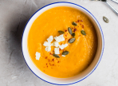

DISH OF THE WEEK
green beans with salmon
- 245
- 45 min.

Using your pumpkin


Pumpkin soup
Pumpkin soup
Pumpkin soup
Using your salad

Salad bread
Salad bread
Salad bread
Do you have?
Using your chicken
Chicken wings
Chicken wings
Chicken wings


home

cookbook

pantry
profile